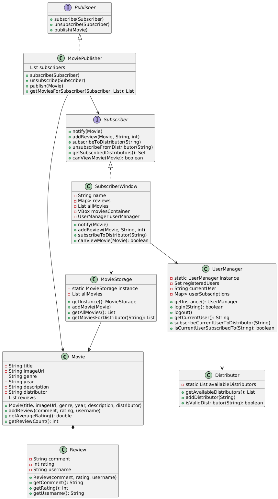
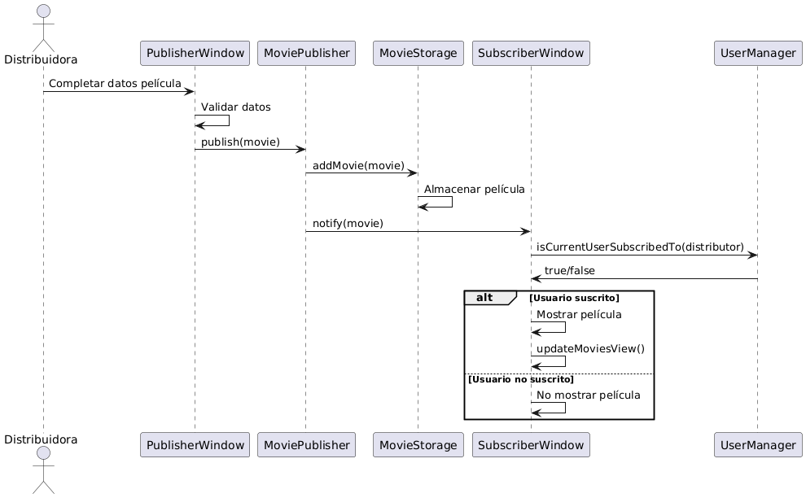
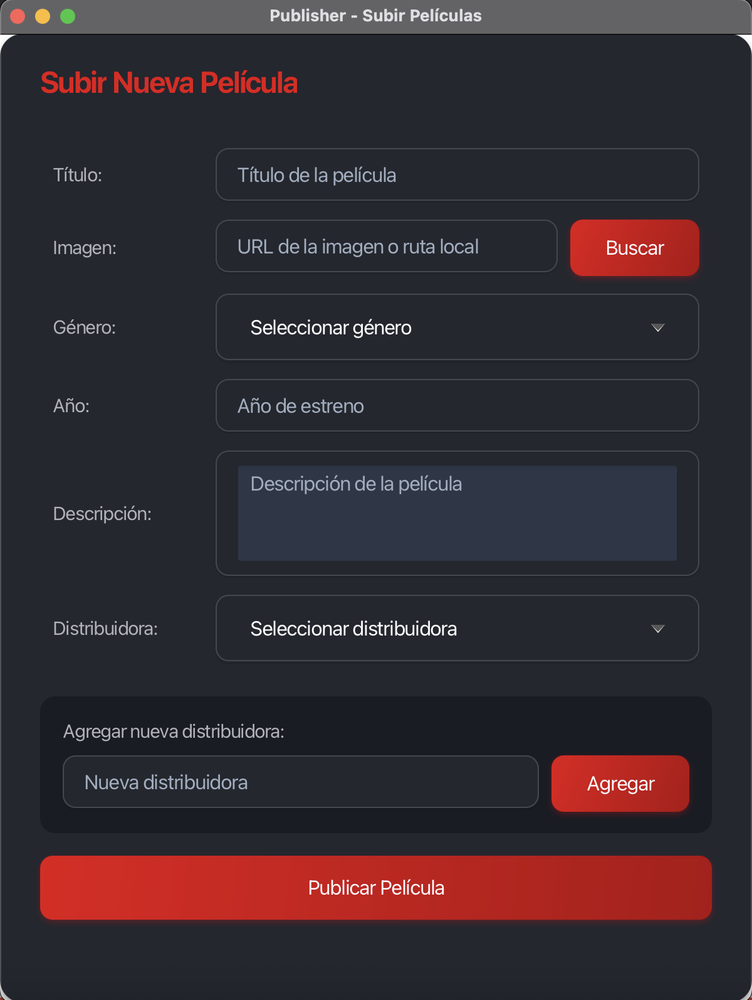
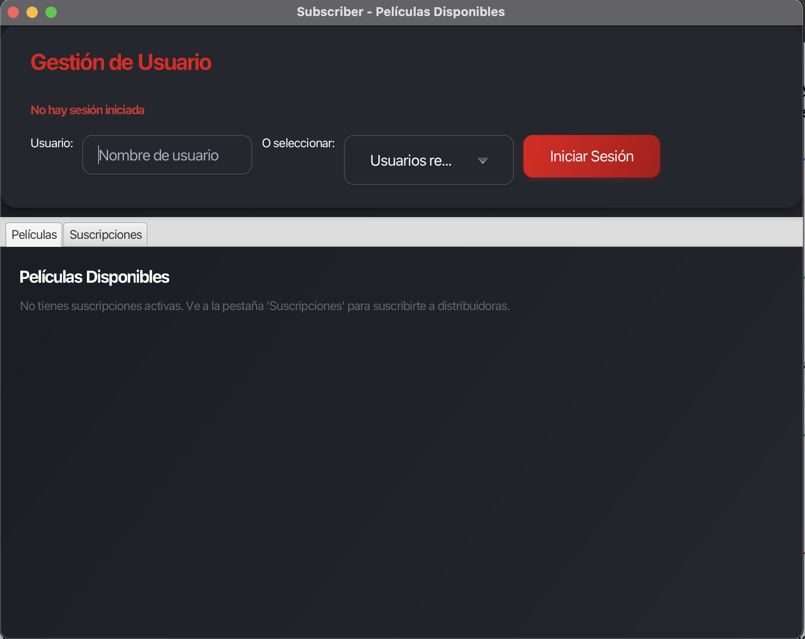
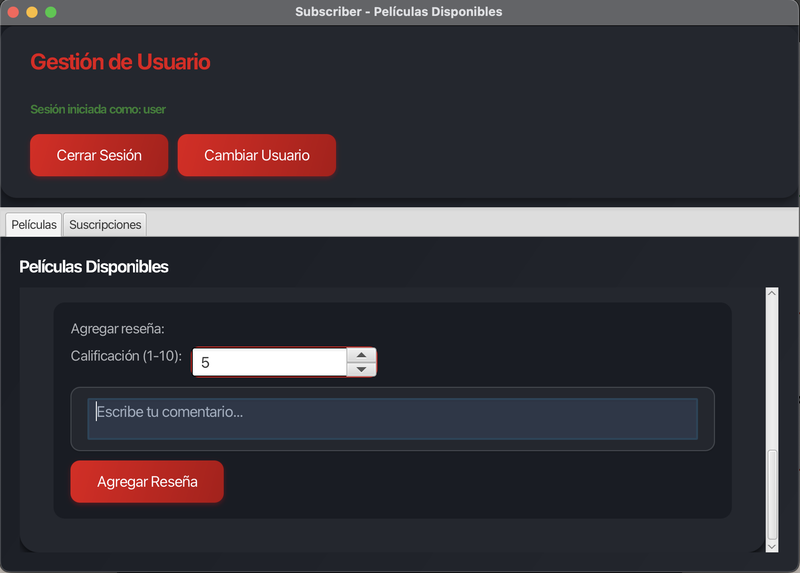

Sistema Publisher-Subscriber de Películas
Información del Proyecto
Desarrollado por: Diego Acevedo Santander, Ignacio Riquelme, Andres Riveros, Jeremy Zavala
Tecnología: JavaFX
Patrón de diseño: Publisher-Subscriber
Fecha: 04/07/2025
1. Descripción del Problema
El proyecto consiste en desarrollar un sistema de distribución de películas que implementa el patrón Publisher-Subscriber.
El sistema permite a las distribuidoras (publishers) publicar películas y a los usuarios (subscribers) suscribirse a
distribuidoras específicas para recibir notificaciones de nuevas películas. Los usuarios pueden calificar y reseñar las
películas de las distribuidoras a las que están suscritos. El sistema gestiona múltiples usuarios, sus suscripciones
individuales y mantiene un registro de todas las reseñas y calificaciones de manera persistente durante la sesión.
2. Análisis del Problema
2.1 Entidades Principales
- Movie: Representa una película con título, género, año, descripción, imagen, distribuidora y reseñas
- Publisher: Entidad que publica películas (distribuidoras)
- Subscriber: Usuarios que se suscriben a distribuidoras para recibir películas
- Distributor: Compañías distribuidoras de películas (Netflix, Disney, etc.)
- User: Usuarios individuales del sistema con sus propias suscripciones
- Review: Reseñas y calificaciones de películas
2.2 Interacciones del Sistema
Funcionalidades Principales:
- Publicación de películas: Las distribuidoras pueden agregar nuevas películas al sistema
- Suscripciones: Los usuarios pueden suscribirse/desuscribirse a distribuidoras
- Notificaciones: Los usuarios reciben notificaciones solo de las distribuidoras a las que están suscritos
- Sistema de reseñas: Los usuarios pueden calificar (1-10) y comentar películas
- Gestión de usuarios: Login/logout con persistencia de suscripciones por usuario
- Filtrado de contenido: Los usuarios solo ven películas de sus suscripciones
2.3 Interacciones con el Medio Externo
- Interfaz de Usuario: JavaFX proporciona ventanas separadas para Publisher y Subscriber
- Gestión de Archivos: Sistema de selección de imágenes para películas
- Persistencia de Sesión: Mantiene estado de usuarios y suscripciones durante la ejecución
3. Definición de Requerimientos
3.1 Casos de Uso
Caso de Uso 1: Publicar una Película
Actor: Distribuidora (Publisher)
Descripción: La distribuidora publica una nueva película en el sistema
Flujo Principal:
- La distribuidora accede a la ventana de publicación
- Completa los datos de la película (título, género, año, descripción, imagen)
- Selecciona la distribuidora responsable
- Publica la película
- El sistema notifica automáticamente a los usuarios suscritos a esa distribuidora
Caso de Uso 2: Suscribirse a una Distribuidora
Actor: Usuario (Subscriber)
Descripción: Un usuario se suscribe a una distribuidora para recibir sus películas
Flujo Principal:
- El usuario inicia sesión en el sistema
- Navega a la pestaña de "Suscripciones"
- Selecciona una distribuidora disponible
- Confirma la suscripción
- El sistema actualiza sus suscripciones y muestra las películas disponibles
Caso de Uso 3: Agregar Reseña a una Película
Actor: Usuario autenticado
Descripción: Un usuario logueado agrega una reseña y calificación a una película
Flujo Principal:
- El usuario visualiza una película de sus suscripciones
- Selecciona una calificación del 1 al 10
- Escribe un comentario sobre la película
- Envía la reseña
- El sistema actualiza la calificación promedio y muestra la reseña
4. Diseño
4.1 Diagrama de Clases

4.2 Diagrama de Secuencia - Publicar Película

4.3 Arquitectura del Sistema
El sistema sigue una arquitectura por capas:
- Capa de Presentación: PublisherWindow, SubscriberWindow (JavaFX)
- Capa de Lógica de Negocio: MoviePublisher, UserManager, Distributor
- Capa de Datos: MovieStorage, Movie, Review
- Capa de Interfaz: Publisher, Subscriber (interfaces)
5. Implementación
5.1 Patrones de Diseño Utilizados
- Publisher-Subscriber: Patrón principal para notificaciones de películas
- Singleton: UserManager y MovieStorage para gestión centralizada
- Observer: Implementado a través del patrón Publisher-Subscriber
5.2 Características Técnicas
Tecnologías y Herramientas:
- JavaFX: Framework para interfaces gráficas
- Java Collections: Para manejo de listas y mapas
- CSS: Estilos personalizados (modern.css)
- FileChooser: Selección de imágenes
- Streams API: Para cálculos de promedios
5.3 Estructura del Código
src/
├── Main.java // Clase principal de la aplicación
├── Movie.java // Modelo de película con reseñas
├── Publisher.java // Interfaz Publisher
├── Subscriber.java // Interfaz Subscriber
├── MoviePublisher.java // Implementación del Publisher
├── SubscriberWindow.java // GUI y lógica del Subscriber
├── PublisherWindow.java // GUI del Publisher
├── UserManager.java // Gestión de usuarios (Singleton)
├── MovieStorage.java // Almacenamiento global (Singleton)
├── User.java // Clase de usuario
├── Distributor.java // Gestión de distribuidoras
└── modern.css // Estilos de la aplicación
6. Pruebas
6.1 Prueba del Caso de Uso 1: Publicar Película
Ventana del Publisher

Descripción: La ventana del Publisher permite ingresar todos los datos de la película incluyendo título, género, año, descripción, imagen y distribuidora. Al completar todos los campos y presionar "Publicar Película", el sistema valida los datos y notifica automáticamente a los usuarios suscritos.
6.2 Prueba del Caso de Uso 2: Suscripción a Distribuidora
Gestión de Suscripciones

Descripción: La pestaña de suscripciones muestra todas las distribuidoras disponibles y permite al usuario suscribirse. Una vez suscrito, aparece en la sección "Mis Suscripciones" con opción de desuscribirse.
6.3 Prueba del Caso de Uso 3: Agregar Reseña
Sistema de Reseñas

Descripción: Los usuarios autenticados pueden agregar reseñas con calificaciones del 1 al 10. El sistema muestra el promedio de calificaciones y todas las reseñas con el nombre del usuario que las escribió.
6.4 Dificultades Encontradas
Principales Desafíos:
- Gestión de Estado: Mantener sincronizadas las suscripciones entre usuarios
Solución: Implementación del patrón Singleton para UserManager
- Filtrado de Contenido: Mostrar solo películas de distribuidoras suscritas
Solución: Método canViewMovie() que verifica suscripciones
- Persistencia de Reseñas: Asociar reseñas con usuarios específicos
Solución: Sistema de autenticación y Review class con username
- Interfaz Responsive: Adaptar la GUI a diferentes tamaños de ventana
Solución: ScrollPane y layouts flexibles
6.5 Bugs Conocidos
- Ninguno reportado: El sistema funciona correctamente según las pruebas realizadas
- Limitación: Los datos no persisten entre ejecuciones del programa
- Mejora futura: Agregar base de datos para persistencia real
7. Conclusiones
7.1 Objetivos Cumplidos
- ✅ Implementación exitosa del patrón Publisher-Subscriber
- ✅ Sistema completo de suscripciones por usuario
- ✅ Gestión de reseñas y calificaciones
- ✅ Interfaz gráfica intuitiva y funcional
- ✅ Filtrado de contenido según suscripciones
7.2 Aprendizajes
- Aplicación práctica de patrones de diseño
- Desarrollo de interfaces gráficas con JavaFX
- Gestión de estado en aplicaciones
- Implementación de sistemas de notificación
7.3 Trabajo Futuro
- Integración con base de datos para persistencia
- Implementación de sistema de recomendaciones
- Mejoras en la interfaz de usuario
- Funcionalidades adicionales como favoritos
8. Enlaces y Recursos
8.1 Código Fuente
📁 Descargar código fuente completo
8.2 Dependencias
- JavaFX: Incluido en JDK 8, módulo separado en JDK 11+
- Java 8+: Versión mínima requerida
8.3 Instrucciones de Ejecución
ANTES DE COMPILAR
• Asegurarse de colocar la ruta donde se tiene guardado las librerías para el uso de JavaFX en el archivo makefile
• Cambiar la variable PATH_TO_FX: "ruta"
• La ruta debe estar cerrada entre comillas " "
• EJEMPLO: PATH_TO_FX="C:/Program Files/Java/jdk-24/javafx-sdk-24.0.1/lib"
• Compilado en git bash
COMPILAR
• Escribir por consola "make all"
Sistema Publisher-Subscriber de Películas
Desarrollado con JavaFX | Patrón Publisher-Subscriber | [Año]